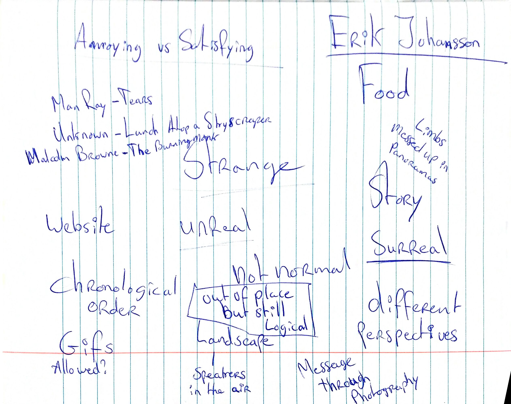

Assignments
Introduction

The idea is to make photographs that are a little out of place. Meaning that at first sight (the first second you see the photograph) the picture looks normal, but actually something is very strange or surreal. On the left is a picture of the brainstorm for the topic.
1st Exercise Topic: "Movement and Depth of Field"
1. Movement


1.1 Frozen Movement


1.2 Captured Movement


1.3 Panning


2. Depth of Field
2.1 Small Depth of Field
2.1a
2.1b
2.1c